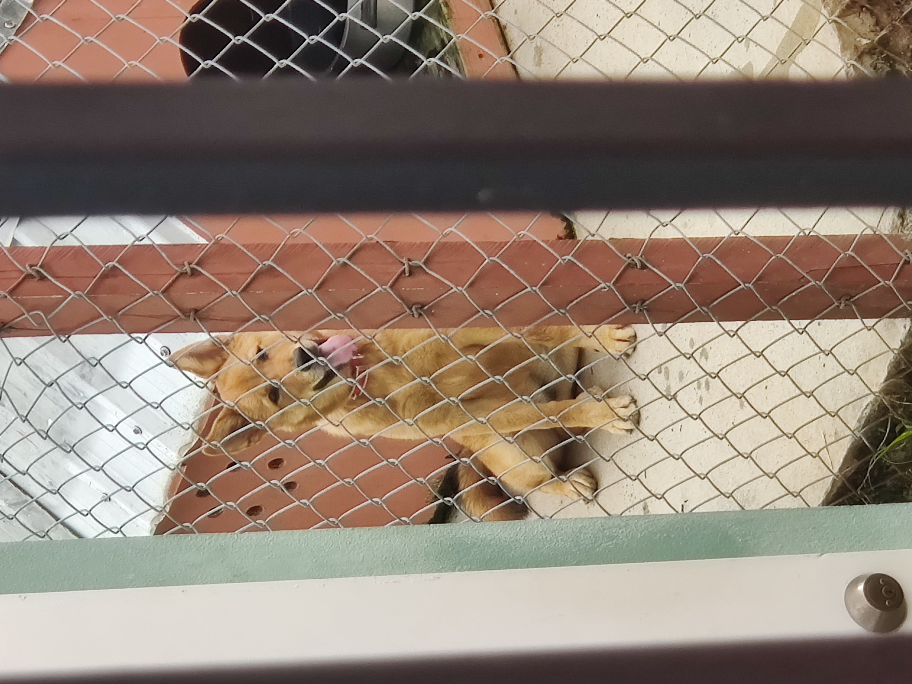

Dog's Name: Minnie
October 9th 2022 by Kalifa Roberts

On Tuesday 4th October 2022, my dog Minnie got her right eye removed
due to her catching Conjunctivitis earlier this year March. She developed glaucoma,
and she has an allergy towards grass. It eventually became burdensome to deal with and
she got a enucleation surgery. On the brighter side of things, she still behaves like
her regular self!
Minnie has gone through a lot of owners since she's been born. She was even going to be
strayed by her last owner but my father took her from the individual and we've kept her
ever since we got her when I was in fourth form. Although she's persevered through traumatic
times, she's continued to be optimistic and let nothing that she goes through stop her
from being happy. I should take a page out of her book and do the same when life
becomes frustrating at times.
Dog's Name: Safiya
October 9th 2022 by Kalifa Roberts

This little terror that you're seeing in the picture is my precious dog child name Safiya.
I got her from an old school friend of mine on the 9th of May 2022 at the tender age of one
month old. She is the most eccentric, wild, and sweetheart dog I've ever owned. She especially loves
to bite on stones and playing with her tail. I hope to have her for as long as I possibly can
and I love her to pieces!
When Safiya gets older, I plan to breed her with another dog (most likely an Akita like herself)
so that her lifeline can continue on. She's a beautiful, well kept dog and I would love to see her with offspring some day.
Dog's make me happy and help to add to my purpose in life and I would always own a dog as long as
I live. As the saying goes, a dog is a man's best friend and I believe in that saying thoroughly.